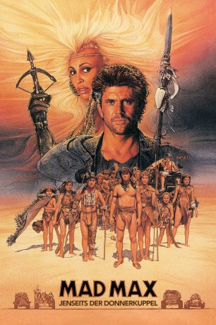

#1290 Mad Max 3 - Jenseits der Donnerkuppel
Alternativ: Mad Max Beyond Thunderdome
 
 IMDB-Wertung: 6.3 / 10
IMDB-Wertung: 6.3 / 10  Metascore: 71
Metascore: 71 
Mad Max, der letzte wahre Kämpfer nach der barbarischen Apokalypse, gelangt auf der Suche nach seinem gestohlenen Dromedargespann an den Wüstenhandelsplatz Bartertown. Hier herrscht Aunty Entity mit Strenge und Gewalt. Sie schlägt Max einen Handel vor: wenn er den riesenhaften Blaster im Zweikampf unter der Donnerkuppel besiegt, soll er seine Ausrüstung zurückerhalten. Max gewinnt die erbarmungslose Auseinandersetzung, bei der alle Waffen erlaubt sind, doch er schenkt Blaster und seinem Herrn Master, einem Gnom, das Leben. Wütend läßt Aunty ihn fesseln und in die Wüste jagen. Aber Mad Max kehrt zurück nach Bartertown. Härter und unerbittlicher als je zuvor. Bei einer rasanten Verfolgungsjagd durch die unendliche Wüste kommt es zur spektakulären Entscheidung...
Jahr: 1985
Dauer: 107 Minuten
FSK: 16
Land: Australien Studio: Warner Home VideoTonspuren:
Untertitel: , , , , , Englisch, , Französisch, Deutsch, , , , , Japanisch, Koreanisch,
Auflösung: 1080p (1920x800) Größe: 10444 MB
Genre: Action, Abenteuer, Sci-Fi
Regisseur: George Miller, George Ogilvie
Drehbuch: Terry Hayes, George Miller, George Miller, Byron Kennedy
Soundtrack: Maurice Jarre
Darsteller:
 Mel Gibson als Mad Max Rockatansky
Mel Gibson als Mad Max Rockatansky Bruce Spence als Jedediah the Pilot
Bruce Spence als Jedediah the Pilot- Tina Turner als Aunty Entity
- Frank Thring als The Collector
- Robert Grubb als Pig Killer
- George Spartels als Blackfinger
- Helen Buday als Savannah Nix
 Justine Clarke als Anna Goanna
Justine Clarke als Anna Goanna- Tushka Bergen als Guardian
- Adam Cockburn als Jedediah Jr.
- Angelo Rossitto als The Master
- Paul Larsson als The Blaster
- Angry Anderson als Ironbar
- Edwin Hodgeman als Dr. Dealgood
- Bob Hornery als Waterseller
- Andrew Oh als Ton Ton Tattoo
- Ollie Hall als Aunty's Guard
- Lee Rice als Aunty's Guard
- Max Worrall als Aunty's Guard
- Susan Leonard als Aunty's Guard
- Robert Simper als Aunty's Guard
- Virginia Wark als Aunty's Guard
- Geeling Ng als Aunty's Guard
- Ray Turnbull als Aunty's Guard
- Brian Ellison als Aunty's Guard
- Gerard Armstrong als Aunty's Guard
- Mark Spain als Mr. Skyfish
- Mark Kounnas als Gekko
- Rod Zuanic als Scrooloose
- Shane Tickner als Eddie
- Toni Allaylis als Cusha - Pregnant Girl
- James Wingrove als Tubba Tintye
- Adam Scougall als Finn McCoo
- Tom Jennings als Slake
- Gerry D'Angelo als Hunter
- Travis Latter als Hunter
- Miguel López als Hunter
- Paul Daniel als Hunter
- Emily Stocker als Guardian
- Sandie Lillingston als Guardian
- Adam Willits als Mr. Scratch
- Ben Chesterman als Gatherer
- Liam Nikkinen als Gatherer
- Dan Chesterman als Gatherer
- Christopher Norton als Gatherer
- Katharine Cullen als Gatherer
- Heilan Robertson als Gatherer
- Gabriel Dilworth als Gatherer
- Hugh Sands als Gatherer
- Rebekah Elmaloglou als Gatherer
Datei: X:\4-Tetralogie(M-Z)\Mad Max\Mad Max 3 - Jenseits der Donnerkuppel (1985, FSK16, 1920x800).mkv seit 16.06.2015
Festplatte: HD Collection-3(N-Z)-6(A-Z)
 Es gibt insgesamt 8 Filme in der Gruppe '4-Tetralogie(M-Z)\Mad Max'
Es gibt insgesamt 8 Filme in der Gruppe '4-Tetralogie(M-Z)\Mad Max'